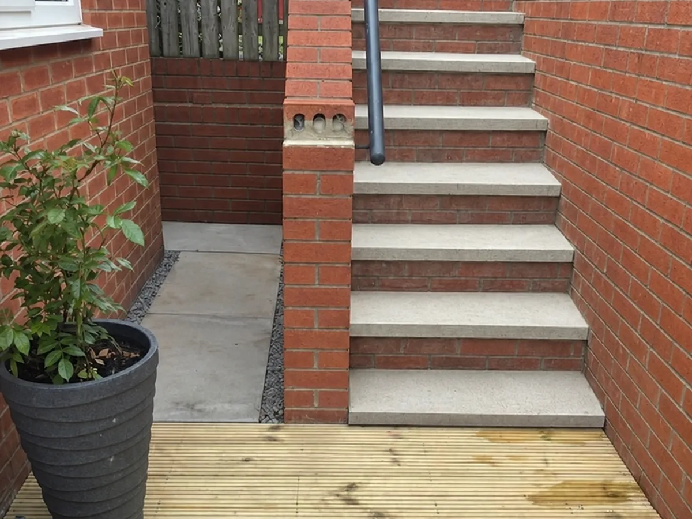

Built from the base
Concrete Work

From concrete paths and paving slabs to hardstanding and concrete bases, we provide strong, durable groundwork for a wide range of outdoor projects.
Every job starts with careful ground preparation to make sure the base is suitable for its intended use. We consider ground levels, access and drainage before creating a solid foundation designed for long-lasting performance and a clean, professional finish.